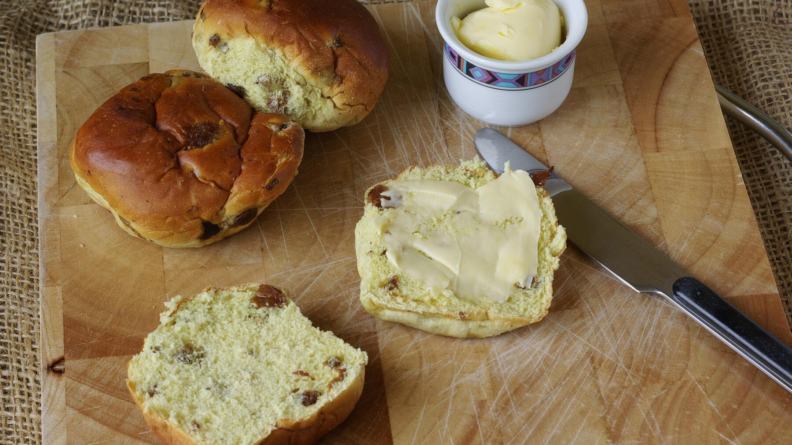

Zurück zur Übersicht
Rosinenbrötchen
Weiche, leicht süße Hefebrötchen mit reichlich Rosinen. Eine Portion entspricht einem Brötchen.
- Zeit
- 1 Std. 40 Min.
- Schwierigkeit
- leicht
- Kategorie
- Brot & Brötchen
- Ernährung
- vegetarisch
Zutaten
Portionen
- 250 gMehl
- 20 gHefe
- 30 gZucker
- 1 PriseSalz
- 125 mlLauwarme Milch (gut ⅛ l)
- 60 gMargarine
- 250 gRosinen
Zubereitung
- Mehl, Hefe, Zucker, Salz, Milch und Margarine zu einem glatten, geschmeidigen Teig verkneten. Zuletzt die Rosinen unterkneten und den Teig zugedeckt auf die doppelte Größe aufgehen lassen.
- Zehn Kugeln formen, auf ein mit Backpapier belegtes Blech legen und noch einmal aufgehen lassen.
- Im vorgeheizten Ofen bei 200 °C 15–20 Minuten backen.